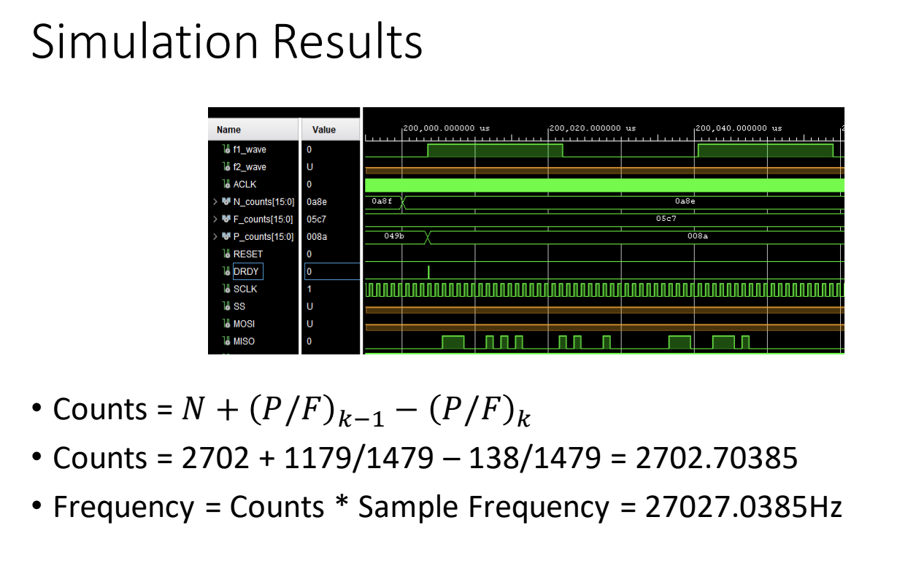
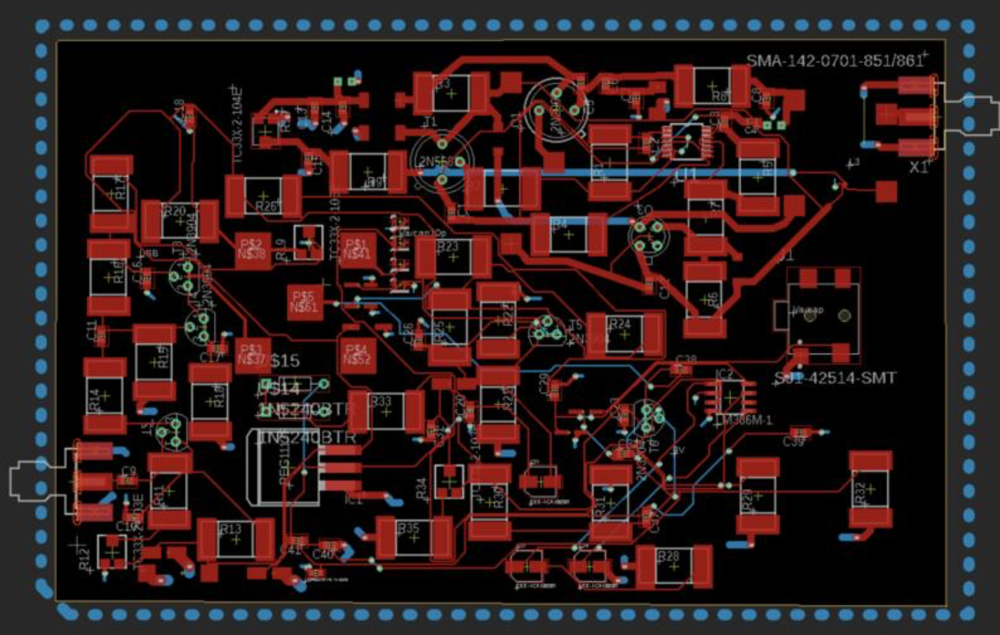
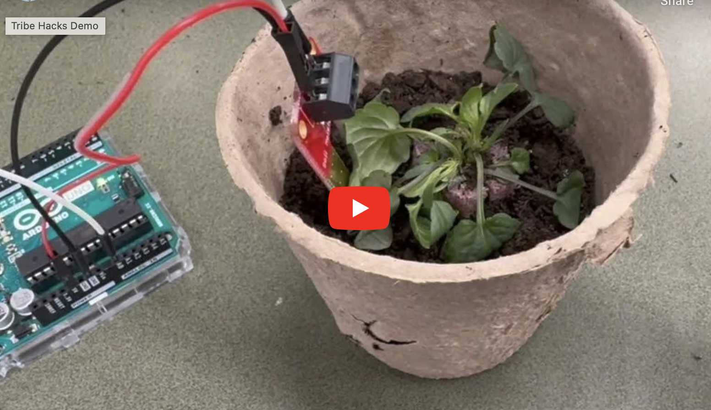

Newt Powers Portfolio
NASA Accelerometer Project

Presentation
Project Title: "Angle Measurement Electronics Development to Support Aeronautics Research" - Implement a counting method to calculate and store accelerometer frequencies in 6 registers using VHDL to obtain more precise angle measurements for aeronautics applications - Write a script for SPl communication for a binary signal 96 bit MISO transmission to a microcontroller
Antenna PCB Design at CU Boulder

Research Poster
- Designed a printed circuit board for a Yagi-Uda antenna transceiver using Autodesk Eagle, placing electrical component pads and making connections to top and ground wires - Simulated a 10 director wire antenna design using 4nec2, resulting in a 43.8% increase in the horizontal gain, increasing the efficiency of signal transmission at the 150 MHz frequency - Searched through technical specification documents for cost, size, and power-efficient capacitors and inductors and imported them 1 usage in a schematic
Soil Moisture Alert App

Project Showcase
At the Tribe Hacks Spring 2024 hackathon, I created a way to alert users when they need to water their plants. My team and I first wrote code in C++ to retrieve soil moisture values from a sensor using an Arduino microcontroller. We then used a Python script to parse the data and send the current value to a MongoDB database. Next, we polled the database from a Flask website coded using HTML, CSS, and Python to determine when to water the plants using the current moisture value and alert users while also displaying a graph about soil moisture levels over time. We won the best People and Planet Hack out of 100+ participants and 27 teams
Embedded Accelerometer Game

Article
I created a game called Infinite Asteroids, running on a 32 Bit ARM development board, whose objective is to move a character left and right to avoid falling asteroids. I created a random spawn algorithm and collision logic for 8 game objects in Python using Pygame. I also mapped the tilting of an on-board accelerometer to the horizontal motion by transmitting angle data through a USB interface and implemented a reset button with interrupts. I used the C programming language to do so.